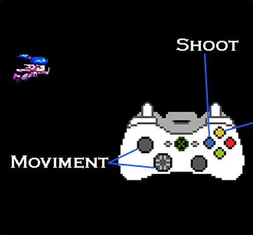

Night Drift Doom
No início de 2017, participei com um amigo Guilherme Vargas de uma game Jam organizada pelo
forum The Game Makers Brasil.
Para esta Jam resolvemos escolher um jogo no estilo de nave na horizontal "scroller shooter", porém eu nunca tinha feito nada no estilo, esta
Jam me ajudou muito a entender como se faz um jogo no estilo e também o que não fazer.
A engine escolhida foi novamente o Construct 2, que é desenvida pela Scirra.
Muito do tempo de desenvolvimento foi gasto com pesquisas, jogar jogos semelhantes, anotar variações de AI, boss, física, upgrades, etc, penso hoje que se eu fosse escolher um
estilo de jogo que sou mais familiarizado, poderia ter feito um jogo maior "duração" e melhor "conteúdo", o tempo investido valeu muito a pena, pois no final eu tinha um jogo
gostoso para jogar e bonito.
Acompanhe o tópico do jogo no forum Night Drift Doom.
Também publiquei o jogo pelo site Itch.io Clique para jogar, que é um dos maiores sites de jogos indies do mundo.



Estou disponibilizando o jogo para Windows, Linux, Mac e Web, escolha a sua versão no link abaixo.